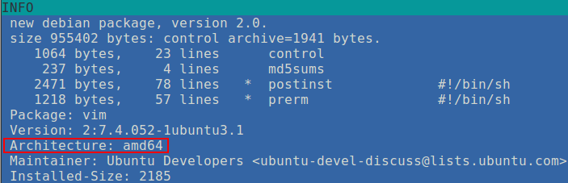

В части 1 говорилось, что при использовании apt-get для скачивания будут доступны только пакеты, соответствующие архитектуре компьютера, на который они загружаются. Но это не так. Даже "сидя" на 32-х битном дистрибутиве, скачать пакеты для 64-х битного дистрибутива возмножно. Достаточно добавить маленький суффикс к имени пакета.
Пусть мы используем 32-х битный дистрибутив. Посмотрим, действительно ли это так:
$ dpkg --print-architecture i386
Теперь глянем, для каких еще архитектур есть доступные пакеты:
$ dpkg --print-foreign-architectures
И в ответ не получим ничего. Что ж, неудивительно: на 64-х битный дистрибутив можно установить 32-х битную программу, но наоборот - нельзя. Придеться добавить архитектуру (практического смысла в этом нет, просто сделаем это для демонстрации скачивания пакетов):
$ sudo dpkg --add-architecture amd64 $ dpkg --print-foreign-architectures amd64
C 64-х битными пакетами вроде бы разобрались. А как насчет архитектур ARM, PowerPC и т.д.? В принципе, пакеты для этих архитектур есть в репозиториях Debian, но не в Ubuntu и не в LinuxMint. Так что ограничимся i386 и amd64.
Скачаем уже что-нибудь, например, текстовый редактор Vim для 64-х битного дистрибутива (не забыв
перед этим выполнить sudo apt-get update):
$ apt-get download vim:amd64 $ ls vim_2%3a7.4.052-1ubuntu3.1_amd64.deb
Для пущей уверенности можно зайти в свежескачанный .deb-файл с помощью Midnight Commander'а и убедиться правильности архитектуры, что и продемонстрировано на рисунке 1:

Чтобы скачать не только готовый двоичный пакет, но и исходные тексты придеться сначала добавить соответствующие ссылки. Но не в файл /etc/apt/sources.list. В Ubuntu (а следовательно, и в LinuxMint) для источников ПО есть каталог /etc/apt/sources.list.d. А уже в нем находятся файлы, которые содержат ссылки определенной категории. Посмотрим, что уже есть:
$ ls -alh /etc/apt/sources.list.d/ total 24K drwxr-xr-x 2 root root 4,0K Apr 2 11:23 . drwxr-xr-x 6 root root 4,0K Apr 2 11:23 .. -rw-r--r-- 1 root root 78 May 24 2016 bro.list -rw-r--r-- 1 root root 59 Nov 27 2014 getdeb.list -rw-r--r-- 1 root root 140 Apr 2 11:23 mc3man-trusty-media-trusty.list -rw-r--r-- 1 root root 529 Nov 27 2014 official-package-repositories.list
Откуда взялся файл getdeb.list я не знаю. Да и содержит этот файл единственную строчку, являющуюся комментарием. bro.list и mc3man-trusty-media-trusty.list соответствуют сторонним репозиториям. А вот official-package-repositories.list - это список оригинальных репозиториев (по крайней мере, так следует из названия). Посмотрим на его содержимое:
$ cat /etc/apt/sources.list.d/official-package-repositories.list # Do not edit this file manually, use Software Sources instead. deb http://packages.linuxmint.com rebecca main upstream import #id:linuxmint_main deb http://extra.linuxmint.com rebecca main #id:linuxmint_extra deb http://archive.ubuntu.com/ubuntu trusty main restricted universe multiverse deb http://archive.ubuntu.com/ubuntu trusty-updates main restricted universe multiverse deb http://security.ubuntu.com/ubuntu/ trusty-security main restricted universe multiverse deb http://archive.canonical.com/ubuntu/ trusty partner
Все вполне предсказуемо. Будет логичным предположение, что для подключения репозиториев с исходными текстами
потребуется создать еще один файл внутри каталога /etc/apt/sources.list.d/ и напихать в него ссылок.
Но угрожающий комментарий о нежелательности ручного редактирования файла наводит на мысль задействовать-таки
утилиту с графическим интерфейсом. Найти и запустить ее не так уж сложно:
gksudo software-sources. Перед нами предстанет картинка, приведенная на
рисунке 2:
Ставим флажок напротив Enable source code repositories, закрываем окно и на всякий случай делаем
в консоли sudo apt-get update (выполнить команду в терминале будет надежнее, чем кликнуть по
кнопке Update the cache в правом верхнем углу окна уже просто потому, что в терминале мы увидим
информационные сообщения, и не придеться лезь в файл журнала). В выводе должны появиться строчки вроде
... http://archive.ubuntu.com trusty/main Sources .... А в каталоге /etc/apt/sources.list.d
появится новый файл official-source-repositories.list следующего содержания:
deb-src http://packages.linuxmint.com rebecca main upstream import deb-src http://extra.linuxmint.com rebecca main deb-src http://archive.ubuntu.com/ubuntu trusty main restricted universe multiverse deb-src http://archive.ubuntu.com/ubuntu trusty-updates main restricted universe multiverse deb-src http://security.ubuntu.com/ubuntu/ trusty-security main restricted universe multiverse deb-src http://archive.canonical.com/ubuntu/ trusty partner
Чтобы скачать исходный текст программы достаточно выполнить такую команду (для примера скачаем исходные тексты редактора Vim):
$ apt-get source vim
Посмотрим, что же реально скачалось:
$ ls -1 vim-7.4.052 vim_7.4.052-1ubuntu3.1.debian.tar.gz vim_7.4.052-1ubuntu3.1.dsc vim_7.4.052.orig.tar.gz
Именно то, что надо. Подробно останавливаться на описании скачанного не будем (дополнительные сведения можно
почерпнуть в man apt-get). Очевидно, что указывать архитектуру при скачивании исходных текстов
не требуется.
В целом алгоритм создания собственного репозитория простой:
apt-get source <имя_пакета>
apt-get download <имя_пакета>:i386
apt-get download <имя_пакета>:amd64
О том, как получить список всех доступных пакетов уже подробно рассказано в ответе на вопрос How do I search for available packages from the command-line?.
Остается только определиться, каким именно образом мы будем складировать скачанное добро.
Можно поступить просто: разложить скачанное в два каталога: один - для двоичных пакетов, другой - для исходных текстов.
Можно разбить на категории. Узнать, к какой категории (впрочем, они довольно условны) относится тот или иной пакет можно с помощью команды apt-cache. Например,
$ apt-cache show vim Package: vim Priority: optional Section: editors ...
Как видим, Vim относится к категории текстовых редакторов. В принципе, такое разбиение на группы нам вполне подходит. Но, поскольку мы создает собственный репозиторий, лучше будет сохранить информацию о том, откуда был скачан тот или иной пакет. Т.е. чтобы наш репозиторий повторял структуру официального репозитория Ubuntu (LinuxMint и т.д.). Как же получить информацию о том, откуда реально будет скачиваться тот или иной пакет?
Для начала попробуем воспользоваться командой apt-cache:
$ apt-cache showpkg vim
Package: vim
Versions:
2:7.4.052-1ubuntu3.1 (/var/lib/apt/lists/archive.ubuntu.com_ubuntu_dists_trusty-updates_main_binary-i386_Packages)
(/var/lib/apt/lists/security.ubuntu.com_ubuntu_dists_trusty-security_main_binary-i386_Packages)
(/var/lib/dpkg/status)
Description Language:
File: /var/lib/apt/lists/archive.ubuntu.com_ubuntu_dists_trusty_main_binary-amd64_Packages
MD5: 59e8b8f7757db8b53566d5d119872de8
Description Language: en
File: /var/lib/apt/lists/archive.ubuntu.com_ubuntu_dists_trusty_main_i18n_Translation-en
MD5: 59e8b8f7757db8b53566d5d119872de8
2:7.4.052-1ubuntu3 (/var/lib/apt/lists/archive.ubuntu.com_ubuntu_dists_trusty_main_binary-i386_Packages)
Description Language:
File: /var/lib/apt/lists/archive.ubuntu.com_ubuntu_dists_trusty_main_binary-amd64_Packages
MD5: 59e8b8f7757db8b53566d5d119872de8
Description Language: en
File: /var/lib/apt/lists/archive.ubuntu.com_ubuntu_dists_trusty_main_i18n_Translation-en
MD5: 59e8b8f7757db8b53566d5d119872de8
...
Из строчек вроде /var/lib/apt/lists/archive.ubuntu.com_ubuntu_dists_trusty_main_binary-amd64_Packages можно вычленить имя каталога из оригинального репозитория. archive.ubuntu.com_ubuntu_dists_trusty_main_binary-amd64_Packages подоздрительно похоже на уже упоминавшуюся в части 1 строчку archive.ubuntu.com/ubuntu trusty main, только записанное в немного другом порядке и с символами подчеркивания вместо слеша. В принципе, такого рода строчек достаточно, чтобы восстановить структуру каталогов оринигального репозитория.
А именно: использование команды apt-get
c опцией --print-uris. Т.о. можно узнать ссылку на оригинальный файл (сам же пакет при
использовании
этого параметра загружен на будет, подробности см. в man apt-get). Например, узнаем, где
в оригинальном репозитории расположен двоичный пакет редактора Vim:
$ apt-get --print-uris download vim 'http://archive.ubuntu.com/ubuntu/pool/main/v/vim/vim_7.4.052-1ubuntu3.1_i386.deb' ...
Т.о. последний подход лучше всех вышеперечисленных. Но, как всегда, при работе с параметром
--print-uris есть несколько нюансов.
Во-первых, лучше всего ставить параметр перед действием в командной строке. Да, команды
apt-get --print-uris download vim
apt-get download --print-uris vim
apt-get download vim --print-uris
--print-uris сразу после apt-get.
Во-вторых, apt-get --print-uris download ... ничего не напечатает, если пакет уже загружен в
текущий каталог. Проверим это вживую (в начале каждой строки стоит ее порядковый номер для удобства):
1 $ apt-get --print-uris download vim 'http://archive.ubuntu.com/ubuntu/pool/main/v/vim/vim_7.4.052-1ubuntu3.1_i386.deb' ... 2 $ apt-get download vim Get:1 http://archive.ubuntu.com/ubuntu/ trusty-updates/main vim i386 2:7.4.052-1ubuntu3.1 [876 kB] Fetched 876 kB in 1s (498 kB/s) 3 $ apt-get --print-uris download vim 4 $ rm vim_2%3a7.4.052-1ubuntu3.1_i386.deb 5 $ apt-get --print-uris download vim 'http://archive.ubuntu.com/ubuntu/pool/main/v/vim/vim_7.4.052-1ubuntu3.1_i386.deb' ...
Как видим, команда №3 ничего не напечатала (к моменту ее выполнения пакет уже был скачан в текущий каталог). Но после удаления файла пакета Vim из текущего каталога команда №5 напечатала ссылку как ни в чем не бывало [1].
__________
↑
Ссылки, которые выдает apt-get --print-uris download ... можно использовать напрямую,
т.е. можно использовать для скачивания не apt-get, а, например, wget.
Но лучше использовать все-таки apt-get. И не потому что это более элегантно (особенно
в случае скачивания исходных текстов - поди разберись, что там за три файла), а потому, что
apt-get еще проверяет контрольные суммы и т.д.